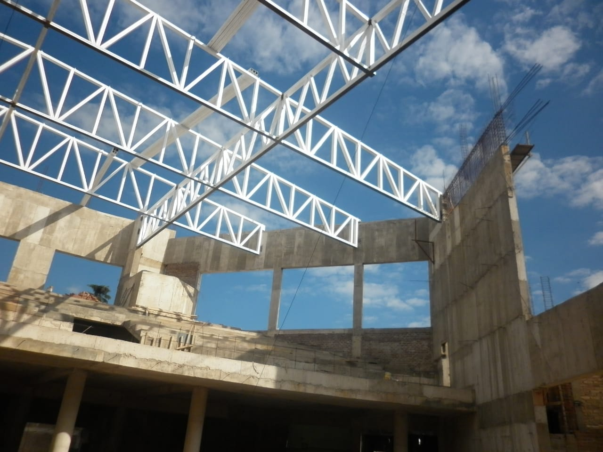
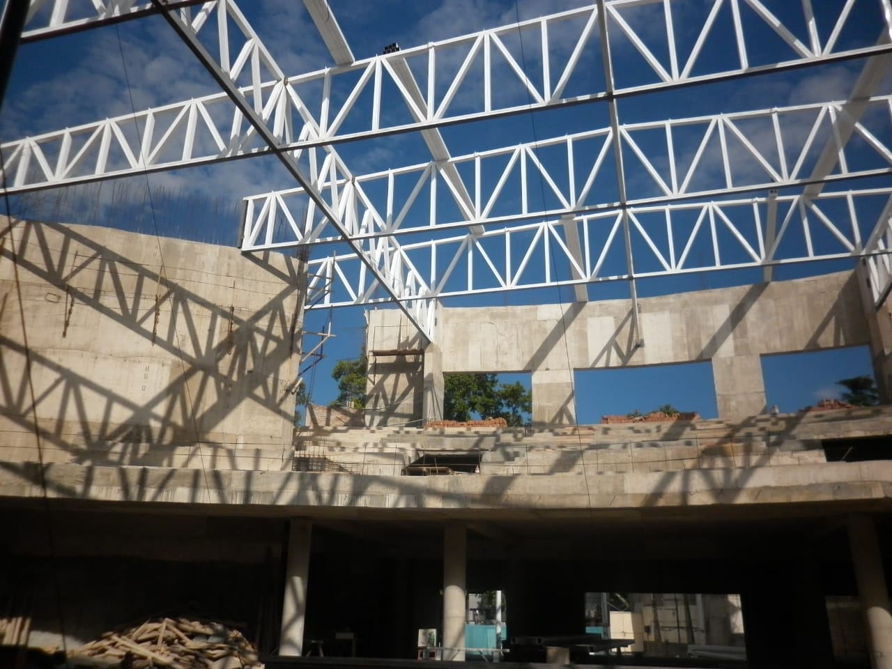
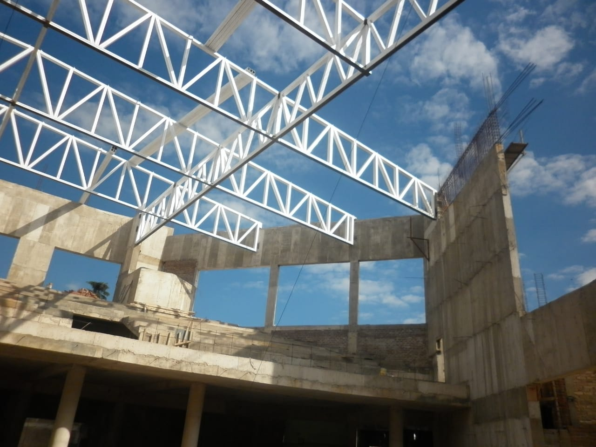
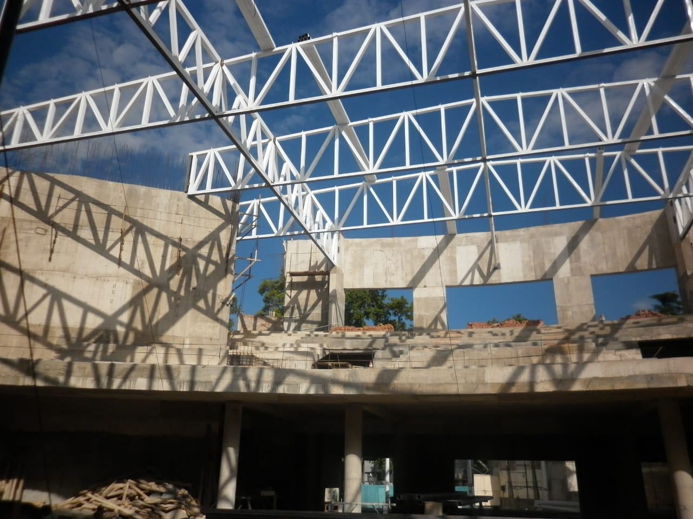
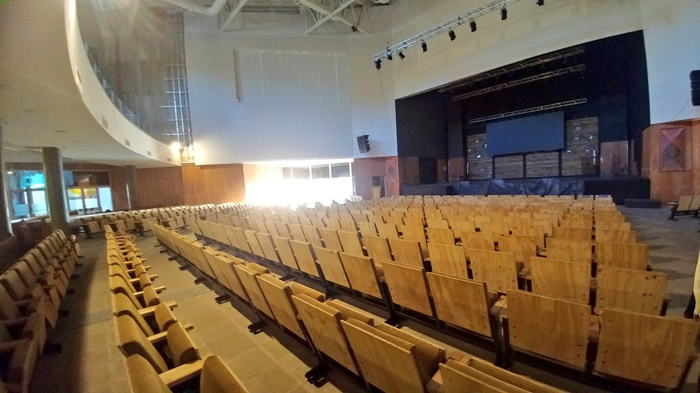
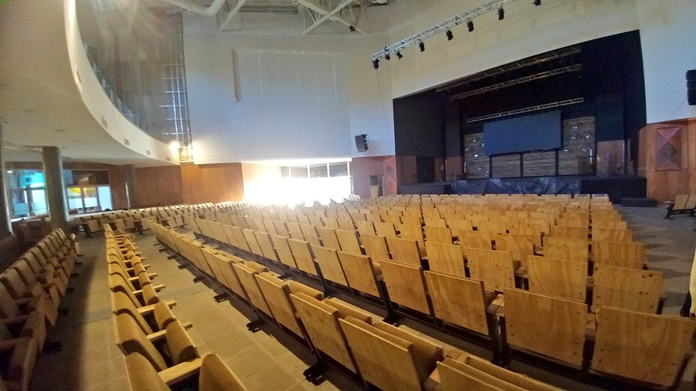
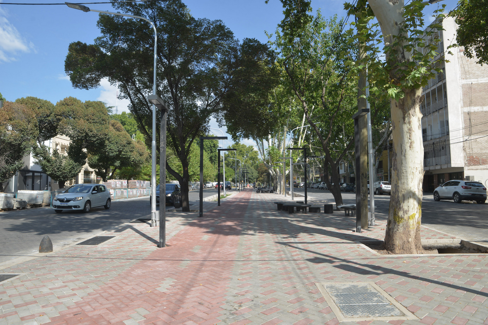
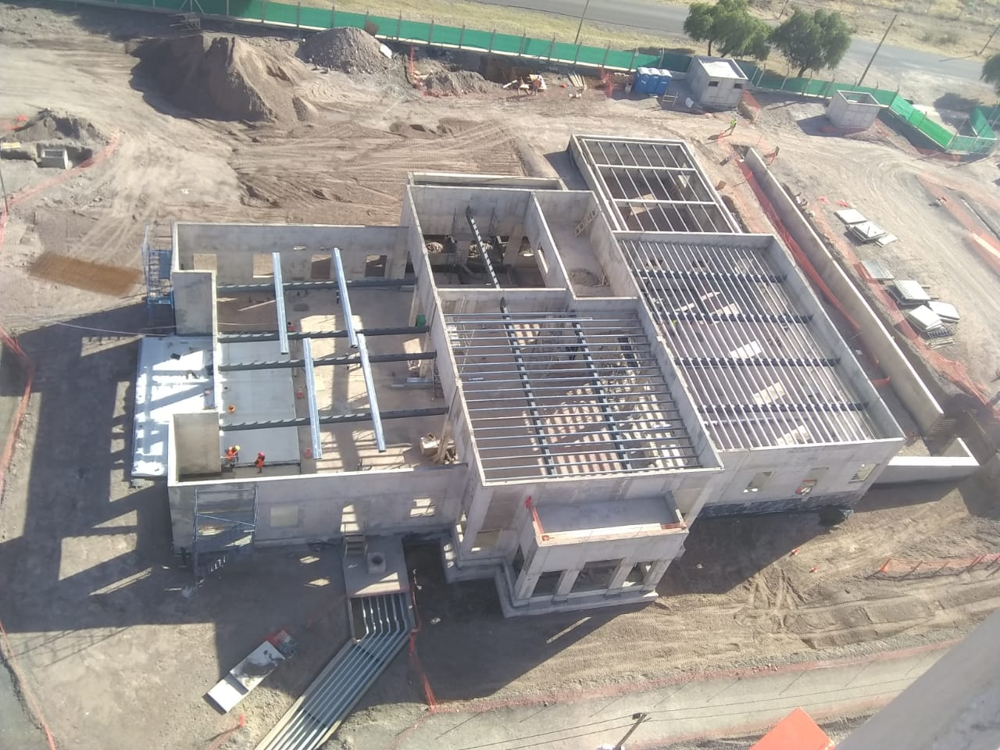
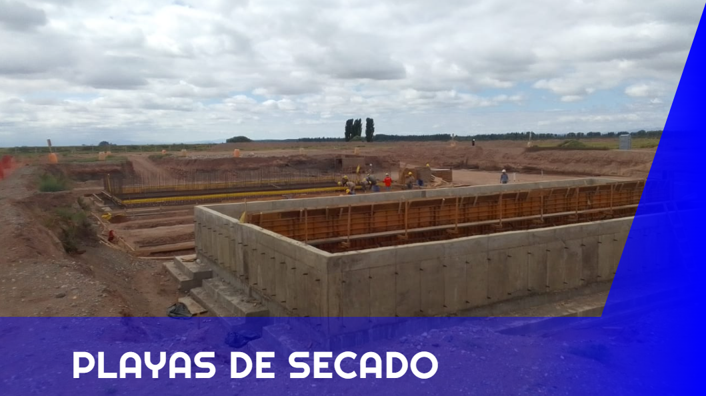

Comunicación
Hola! Soy Miguel,
tengo 45 años y afortunadamente he participado con diferentes equipos en proyectos de Obra Civil.
Cada uno de los trabajos asignados aportó experiencias invaluables que hoy me ayudan a realizar en equipo
nuevas actividades de la manera mas positiva.
En mi tiempo libre me gusta aprender sobre desarrollo web y por ahora estoy encaminado en HTML y CSS
Formación
4-077 - Arq. Manuel V. Civit - Ciudad - Mendoza.
Título: Técnico en Construcciones.
Experiencia
►Marzo 2022 - Actualidad: UTE Corporación del Sur S.A. - Laugero
Construcciones S.A.
Capataz General
Obra: Sistema integral de recolección y tratamiento de efluentes
cloacales - Ciudad de Malargüe
►Abril 2021 - marzo 2022: Laugero Construcciones S.A.
Capataz de Obra Civil
Obra: Iglesia de Jesucristo de los Santos de los Últimos Días -
Mendoza
Sector: Templo & Ancillary
►Septiembre 2013 - Agosto 2019
Da Fré Obras Civiles S.A.
Capataz de Obra Civil
Obra: Iglesia de la Alameda - Mendoza
Remodelación integral de Av. Paso de los Andes - G.Cruz
Paseo Pedro Molina - Ciudad - Mendoza
►Abril 2012 - Abril 2013: Consorcio Río Colorado
Oficial Especializado - Sector: Cristalizadores.
Desarrollo profesional y aptitudes
►Panificación de obra.
►lectura e interpretación de planos.
►Control y seguimiento de subcontratos.
►Análisis de alcance y cronograma de proyectos.
►Administración y coordinación de maquinarias, materiales y recursos
humanos.
►Control de Seguridad e higiene.
Galería
Iglesia de la Alameda - Ciudad - Mendoza
 




 

Remodelación integral de Av. Paso de los Andes - G.Cruz


Paseo Pedro Molina - Ciudad - Mendoza


Iglesia de Jesucristo de los Santos de los Últimos Días - Mendoza


Contenido
